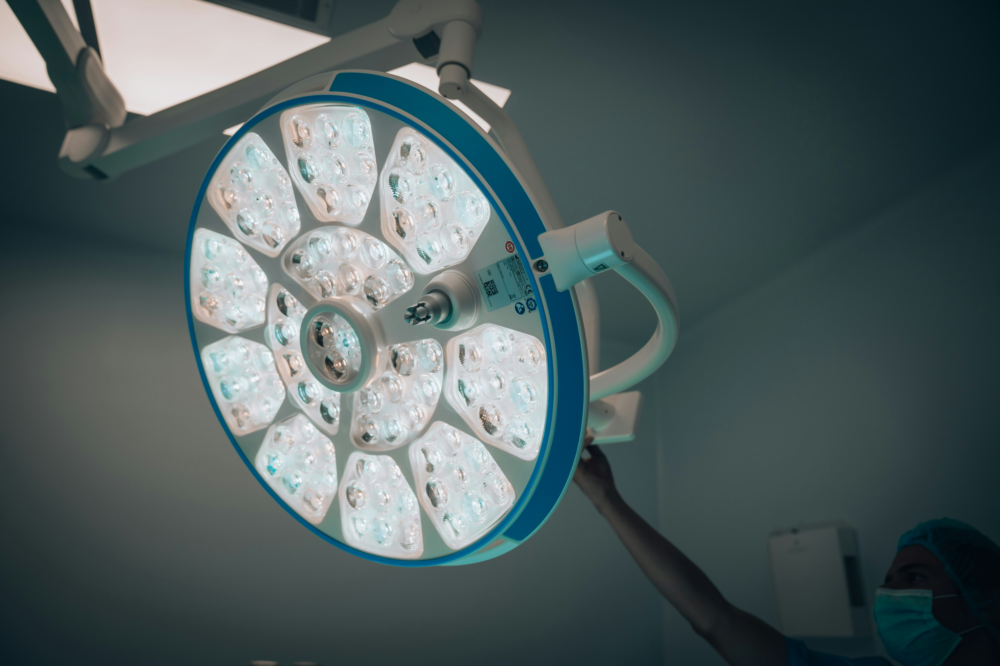

El portón
Aquí comienza el recorrido.
Foto de Anya Chernykh en Unsplash .
¿Dónde está tu dedo, Pili?
Diagnóstico: pérdida de sustancia

Sala de operación
YO
—Hoy no voy a llorar.
Se lo digo al médico. Él se ríe.
El anestesista hace lo suyo y me explica algo.
YO
—¿Y tengo que contar?
OTRO DOCTOR
—Ni que fuera película.
OTRO DOCTOR
—Pero cuente.
Inicio.
10, 9...
ANESTESISTA
—Le va a doler ahora.
Me quejo.
Ya no recuerdo nada.
Foto de César Badilla Miranda en Unsplash .
El Meñique
Herida cortocontundente en el pulpejo medio izquierdo, con pérdida de sustancia. Colgajo para reconstrucción del pulpejo y del lecho ungueal.
07:00
De 7 a 9 se desarma el meñique con el que nací.